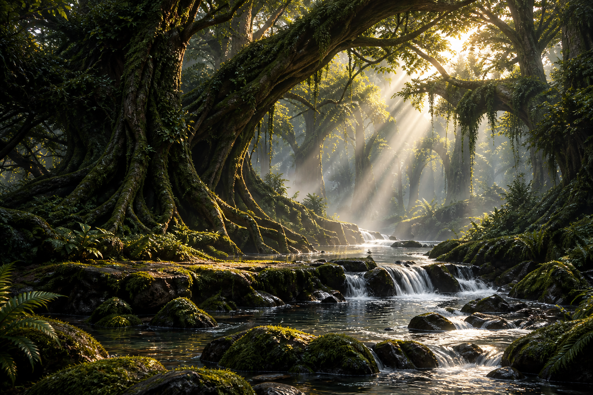
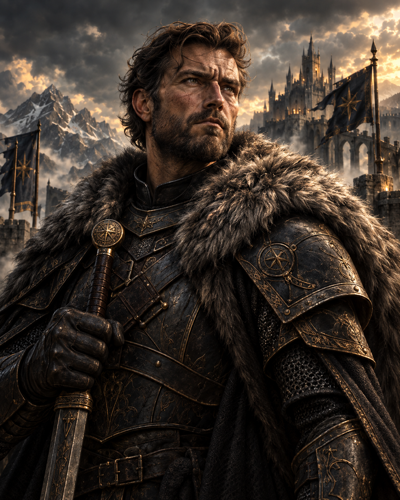
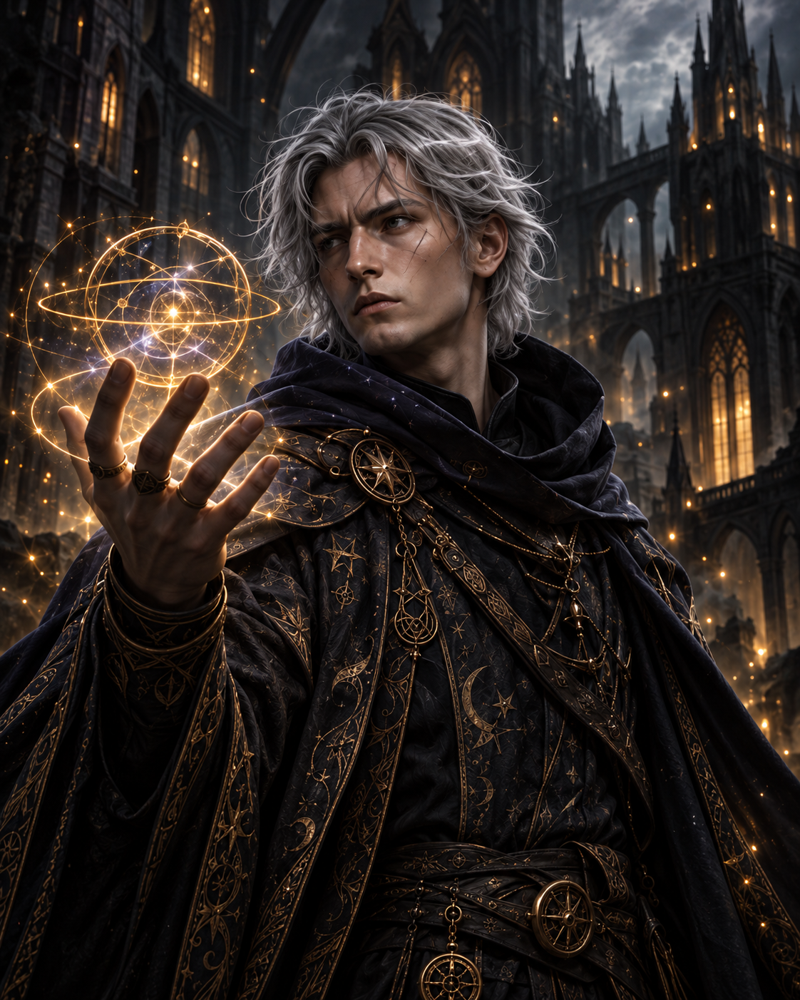
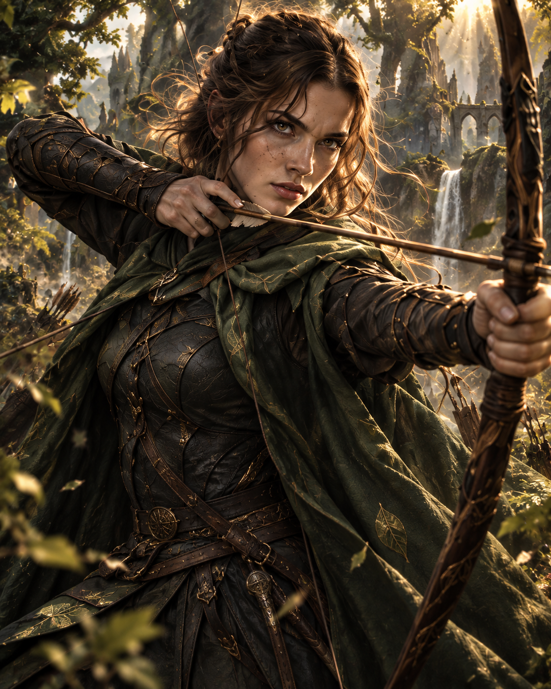
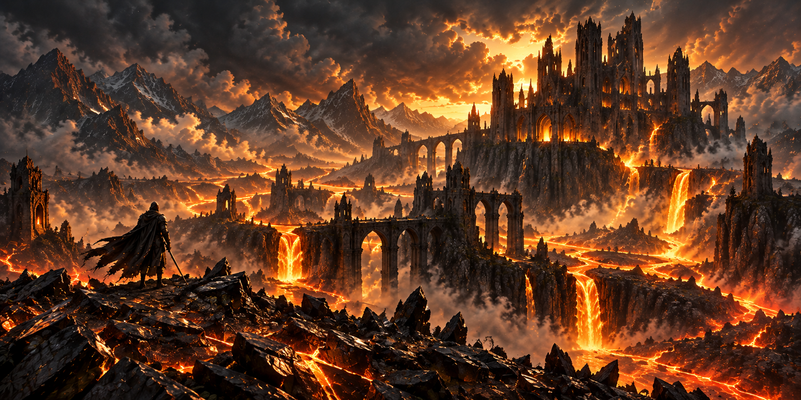
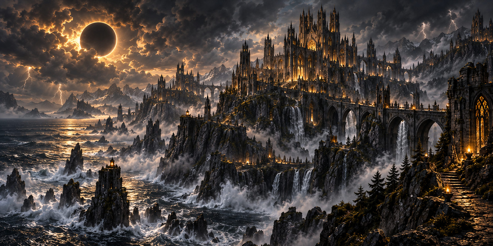
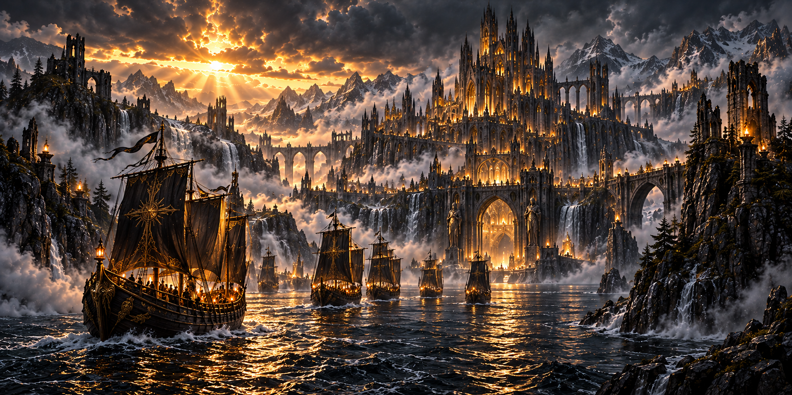

Le monde de Terraform
Galerie
Screens et OST








Exclusivité
Artbook de Terraform
272 pages de concepts, croquis et contenus exclusifs des coulisses. Disponible dans l'édition « Collector ».
Découvrir l'édition